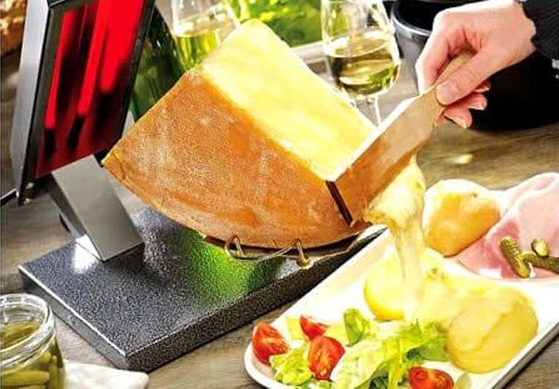
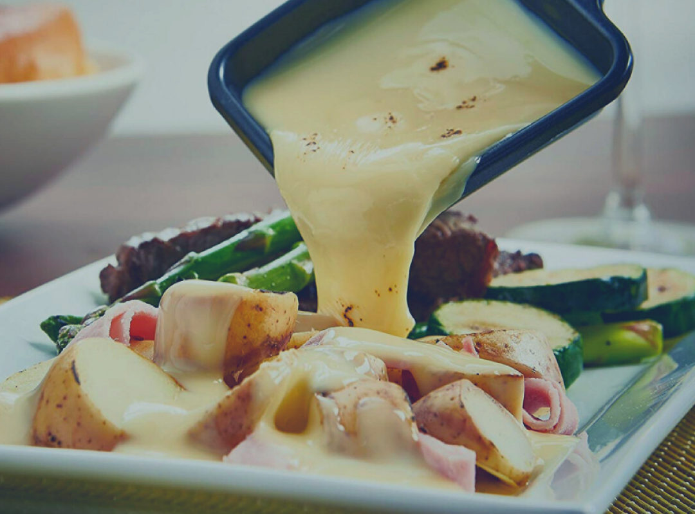

Raclette
Originaire de la région de Savoie en France, la Raclette est un plat traditionnel apprécié pour son fromage fondu crémeux et pour sa délicieuse combinaison d'ingrédients.
 Ingrédients :
- Fromage Raclette (200-250g/personne).
- Pommes de terre (de préférence la variété qui résiste à la cuisson).
- Tranches fines de jambon ou autres types de viande (optionnel).
- Légumes grillés (champignons, poivrons, oignons).
- Cornichons (concombres, oignons rouges).
- Sauces pour garniture (optionnelles).
Instructions :
- Nettoyez et coupez les pommes de terre en tranches ou en morceaux plus gros. Faites-les bouillir ou faites-les frire jusqu'à ce qu'elles soient dorées et tendres à l'intérieur.
- Coupez le fromage Raclette en tranches fines ou en morceaux adaptés à la fonte. Disposez le fromage dans un plateau ou un plat pour le servir facilement.
- Si vous utilisez de la viande, faites-la dorer préalablement dans une poêle ou sur un gril. Coupez les légumes en morceaux adaptés et faites-les griller jusqu'à ce qu'ils soient tendres et légèrement dorés.
- Chauffez l'appareil à Raclette selon les instructions du fabricant.
- Placez les tranches de fromage Raclette dans les poêlons individuels de l'appareil et laissez-les fondre. Pendant que le fromage fond, ajoutez les pommes de terre bouillies ou frites dans les assiettes. Si vous utilisez de la viande et des légumes, disposez-les sur la plaque chauffante de l'appareil à Raclette pour les cuire et les réchauffer. Lorsque le fromage est fondu et commence à dorer légèrement, versez-le sur les pommes de terre dans les assiettes. Ajoutez également la viande et les légumes cuits ainsi que les cornichons. Servez immédiatement et dégustez la Raclette avec vos proches !